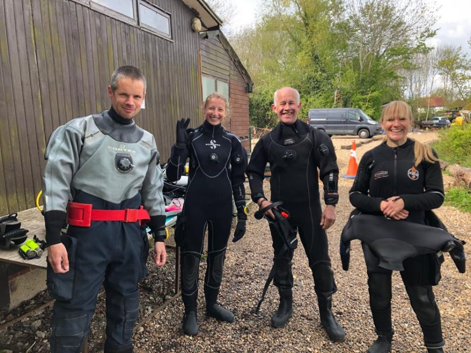
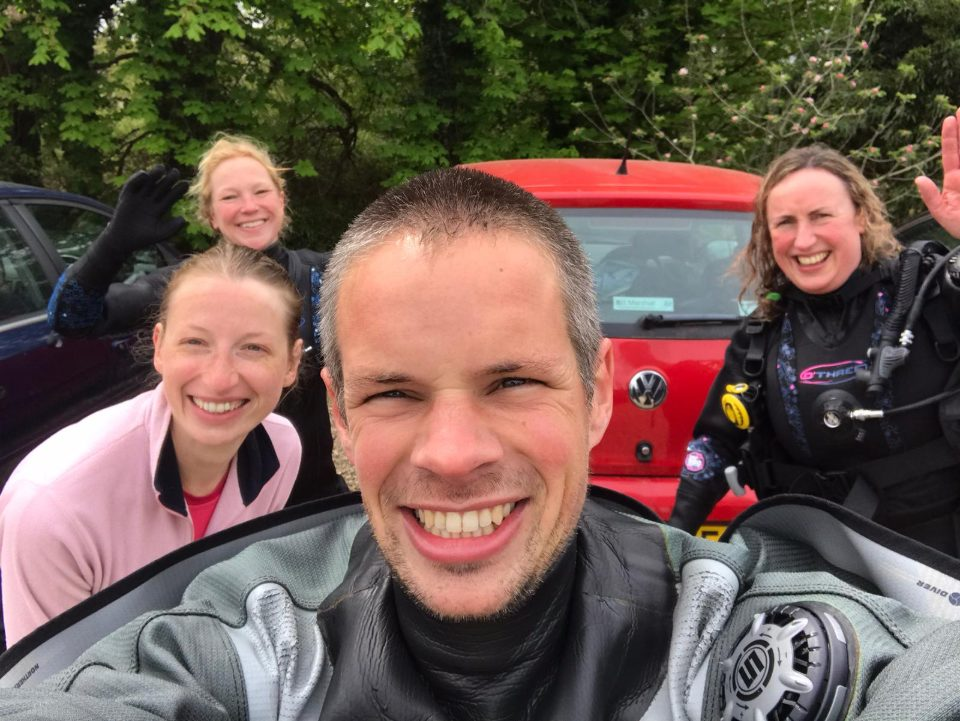
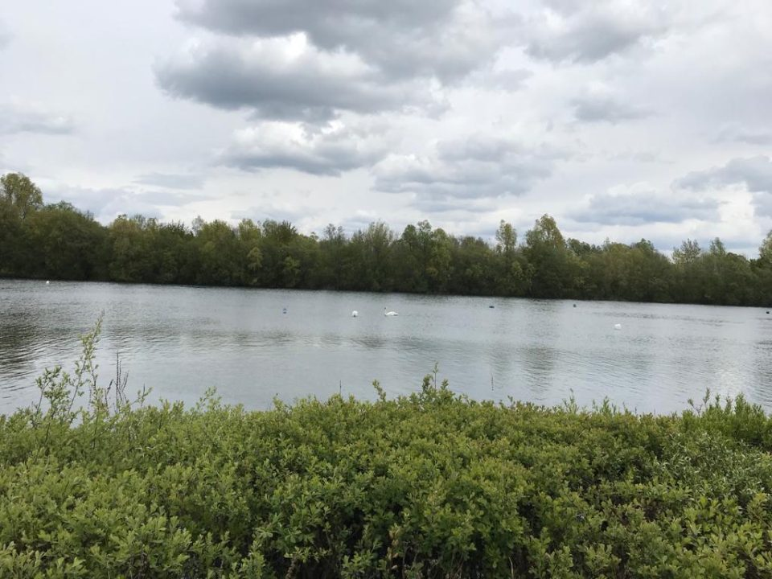
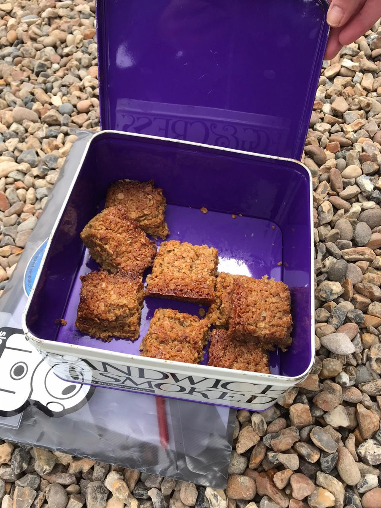

Wraysbury Diving Lake, 3rd May 2021
On Monday 3rd May Alex, Sarah A, Emily, James and Jessica headed to Wraysbury Diving Lake for the first 'warm' up dive of the year.
It was a good opportunity to dust off kit and check everything was in full working order. Sarah got to try out her brand-new dry suit, and Alex his new pony. It was also great to see some friendly diving faces in real life as opposed to on Zoom!
The water temperature was a balmy 11 degrees, and we spent around 45 minutes exploring the bottom of the lake. Not too much wildlife spotted, but we did see a couple of very large pike and many crayfish.
Despite the typically poor Wraysbury vis, we actually managed to find more sunken objects than we have on previous visits: a submarine, multiple boats, set of traffic lights, part of a Jet2.com fuselage (toilet cubical still intact) and a large plastic Ganesh?!
After the dive, it was back on dry land to tuck into a tin of infamous Veys' ginger flapjacks, and some hot bacon butties. Both well earned!
Thanks very much to Alex for organising, it was a fun morning and we all look forward to more water time in 2021!
Reported by Jess



